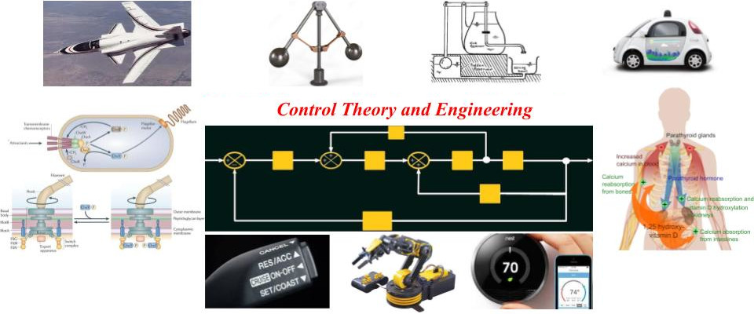

General News
Congratulations to all authors: Editors' Choice for Automatica two awards:
December 2025: Convergence analysis of gradient flow for
overparameterized LQR formulations, Arthur Castello B. de Oliveira,
Milad Siami, Eduardo D. Sontag.
[Volume 182, December 2025, 112504]
June 2025: Properties of immersions for systems with multiple limit
sets with implications to learning Koopman embeddings,
Zexiang Liu, Necmiye Ozay, Eduardo D. Sontag
[Volume 176, June 2025, 112226]
Jan 2026 news: Three papers accepted to ACC 2026:
Small-covariance noise-to-state stability of stochastic systems and
its applications to stochastic gradient dynamics, L. Cui and
Z.P. Jiang and E. D. Sontag
Modular machine learning with applications to genetic circuit
composition, J. Wang and E.D. Sontag and D. Del Vecchio
On the (almost) global exponential convergence of overparameterized
policy optimization for the {LQR} problem, M.K. Wafi and A.C.B de
Oliveira and E.D. Sontag
Jan 2026 news: Paper accepted to L4DC'26:
On the convergence of overparameterized problems: Inherent
properties of the compositional structure of neural networks, A.C.B
de Oliveira and D.D. Jatkar and E.D. Sontag,
Eduardo Sontag elected to Argentina's Academia Nacional de Ciencias
Exactas, Físicas y Naturales, July 2025.
Eduardo Sontag elected to National Academy of Sciences, April 2025.
Eduardo Sontag elected to American Academy of Arts and Sciences, April 2024.
Lectures
-
Eduardo Sontag gave keynote at L4DC in Michigan, in June 2025.
-
Eduardo Sontag gave three talks at Imperial College, Cambridge, and
Oxford in April-May 2025.
-
Eduardo Sontag gave four talks at UCSD and UCSB (including the Petar
Kokotovic lecture at UCSB) in February-March 2025.
New Publications! (Please consult
the publications page for abstracts and more up to date information)
-
Paper on global linearizations published in Systems and Control
Letters:
"Global linearization of asymptotically stable systems without hyperbolicity"
M. D. Kvalheim and E. D. Sontag
-
Paper on overparametrized LQR accepted for Automatica:
"Convergence analysis of gradient flow for overparameterized LQR
formulations"
Arthur Castello Branco de Oliveira, Milad Siami, Eduardo Sontag
-
(2025.04.23) Paper on bispecific T cell engagers accepted for Bulletin of Mathematical Biology
M. Sadeghi, I. Kareva, G. Pogudin, and E.D. Sontag.
. Quantitative pharmacology methods for bispecific T cell engagers.
Bulletin of Mathematical Biology, 2025.
-
(2025.04.21) Paper on cumulative dose responses accepted for J Royal
Society Interface
A. Gupta and E. D. Sontag.
Cumulative dose responses for adapting biological systems.
J Royal Society Interface 2025.
-
(2025.04.04) Paper on induced resistance in chemotherapy accepted for Nature's npj Systems and Synthetic Biology
L. Gevertz, J.M Greene, S. Prosperi, N. Comandante-Lou, and E.D. Sontag.
Understanding therapeutic tolerance through a mathematical model of drug-induced resistance.
npj Systems Biology and Applications, 2025.
-
(2024.10.14) Paper on synthetic circuits accepted for Nature Chemical Biology
J.P. Padmakumar, J. Sun 2, W. Cho 3, Y. Zhou, C. Krenz, Zhong Han W.Z, D. Densmore, E. D. Sontag, and C.A. Voigt.
Partitioning of a 2-bit hash function across 66 communicating cells.
Nature Chemical Biology, 21:268-279, 2025.